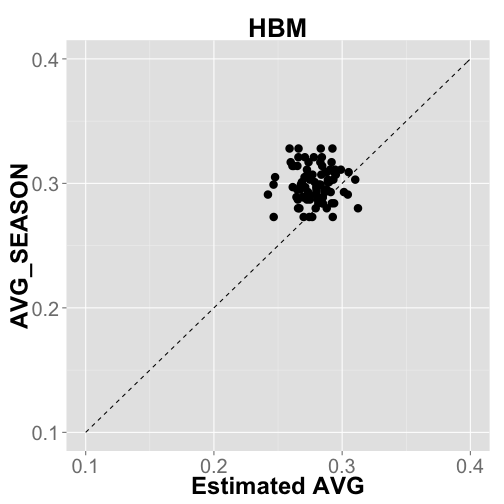
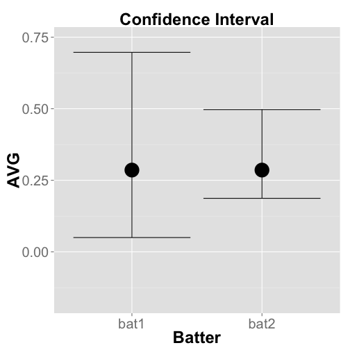

階層ベイズモデルで打率推定
gg_hatano
Mathematical Informatics, M2


Outline
1. Problem: Predict the full-season Batting Average
2. Predict Batting Average with Maximum Likelihood Estimation
3. Predict Batting Average with Hierarchical Bayes Model
Problem
Predict the full-season AVG from data of first 20 days of 2013 season (~ 4/20)
| FULLNAME | ATBAT | HITS | AVG | AVG_SEASON | |
|---|---|---|---|---|---|
| 1 | Pedro Alvarez | 52 | 6 | 0.12 | 0.23 |
| 2 | Elvis Andrus | 59 | 13 | 0.22 | 0.27 |
| 3 | Norichika Aoki | 61 | 18 | 0.29 | 0.29 |
| 4 | Erick Aybar | 28 | 9 | 0.32 | 0.27 |
| 5 | Darwin Barney | 11 | 1 | 0.09 | 0.21 |
| 6 | Adrian Beltre | 55 | 14 | 0.26 | 0.32 |
| 7 | Carlos Beltran | 51 | 13 | 0.26 | 0.30 |
| 8 | Michael Bourn | 45 | 15 | 0.33 | 0.26 |
| 9 | Michael Brantley | 50 | 12 | 0.24 | 0.28 |
| 10 | Jay Bruce | 71 | 21 | 0.30 | 0.26 |
Data : Major League Baseball games (2013) ... Open Data
Words
ATBAT : number of trial
HIT : number of success
AVG : success rate
batter: 89 batters (over 500 atbats)
| FULLNAME | ATBAT | HITS | AVG | AVG_SEASON | |
|---|---|---|---|---|---|
| 1 | Pedro Alvarez | 52 | 6 | 0.12 | 0.23 |
| 2 | Elvis Andrus | 59 | 13 | 0.22 | 0.27 |
| 3 | Norichika Aoki | 61 | 18 | 0.29 | 0.29 |
| 4 | Erick Aybar | 28 | 9 | 0.32 | 0.27 |
| 5 | Darwin Barney | 11 | 1 | 0.09 | 0.21 |
Outline
1. Problem: Predict the full-season Batting Average
2. Predict Batting Average with Maximum Likelihood Estimation
3. Predict Batting Average with Hierarchical Bayes Model
Randomness
Ex. Batting Result of Ichiro (April,2013)
HIT, OUT, OUT, HIT, OUT, HIT, OUT, OUT , OUT, ...
\(n\) hits / \(N\) atbats \(\to\) Likelihood \(\mathrm{L}(q)\):
\[\begin{align*} \mathrm{L}(q) &= \binom{N}{n}q^n (1-q)^{N-n}. \end{align*}\]
where \(q\) is the true Batting Average.
\(\to\) Predict Batting Average
Maximum Likelihood Estimation
Likelihood \(\mathrm{L}(q)\): \[\begin{align*} \mathrm{L}(q) = \binom{N}{n}q^n (1-q)^{N-n}. \end{align*}\]
Estimated parameter value \(\hat{q}\):
\[\begin{align*} \hat{q} = \mathrm{argmax} ~ \mathrm{L}(q) \end{align*}\]

Maximum Likelihood Estimation
Likelihood \(\mathrm{L}(q)\): \[\begin{align*} \mathrm{L}(q) = \binom{N}{n}q^n (1-q)^{N-n}. \end{align*}\]
Solve \[\begin{align*} \frac{\partial}{\partial q_i} \log \mathrm{L}(q_i) &= 0, \\ \frac{n_i}{q_i} - \frac{N_i-n_i}{1-q_i} &= 0, \\ \hat{q_i} &= \frac{n_i}{N_i}. \end{align*}\]
| FULLNAME | AVG | MLE | AVG_SEASON | |
|---|---|---|---|---|
| 1 | Pedro Alvarez | 0.12 | 0.12 | 0.23 |
| 2 | Elvis Andrus | 0.22 | 0.22 | 0.27 |
| 3 | Norichika Aoki | 0.30 | 0.30 | 0.29 |
| 4 | Erick Aybar | 0.32 | 0.32 | 0.27 |
| 5 | Darwin Barney | 0.09 | 0.09 | 0.21 |
| 6 | Adrian Beltre | 0.25 | 0.25 | 0.32 |
| 7 | Carlos Beltran | 0.25 | 0.25 | 0.30 |
| 8 | Michael Bourn | 0.33 | 0.33 | 0.26 |
| 9 | Michael Brantley | 0.24 | 0.24 | 0.28 |
| 10 | Jay Bruce | 0.30 | 0.30 | 0.26 |
Maximum Likelihood Estimation

| FULLNAME | AVG | MLE | AVG_SEASON | |
|---|---|---|---|---|
| 1 | Pedro Alvarez | 0.12 | 0.12 | 0.23 |
| 2 | Elvis Andrus | 0.22 | 0.22 | 0.27 |
| 3 | Norichika Aoki | 0.30 | 0.30 | 0.29 |
| 4 | Erick Aybar | 0.32 | 0.32 | 0.27 |
| 5 | Darwin Barney | 0.09 | 0.09 | 0.21 |
| 6 | Adrian Beltre | 0.25 | 0.25 | 0.32 |
| 7 | Carlos Beltran | 0.25 | 0.25 | 0.30 |
| 8 | Michael Bourn | 0.33 | 0.33 | 0.26 |
| 9 | Michael Brantley | 0.24 | 0.24 | 0.28 |
| 10 | Jay Bruce | 0.30 | 0.30 | 0.26 |
... How can we Shrink the value to mean?


Outline
1. Problem: Predict the full-season Batting Average
2. Test the ramdomness of the time series of Batting Results
3. Predict Batting Average with Maximum Likelihood Estimation
4. Predict Batting Average with Hierarchical Bayes Model
Bayesian Estimation
Prior and Posterior distribution...
- \(P(D)\) : Prob. we obtain data \(D\).
- \(P(q_i)\) : Prior of parameter \(q_i\).
- \(P(q_i | D)\) : Posterior.
Bayesian Formula :
\[\begin{align*} \mathrm{P}(q_i ~ | ~ D) &= \frac{\mathrm{P}(D~|~q_i) \mathrm{P}(q_i)}{\mathrm{P}(D)} \\ & \propto \mathrm{P}(D~|~q_i) \mathrm{P}(q_i). \end{align*}\]
Set the Prior \(\mathrm{P}(q_i)\) which reflects "shrink to mean".
Bayesian Estimation
The Posterior of parameter \(q_i\): \[\begin{align*} \mathrm{P}(q_i | D) \propto \mathrm{P}(D|q_i)\mathrm{P}(q_i).\\ \end{align*}\]
Transform \(q_i \left(\in [0,1]\right)\) to \(r_i \left(\in [-\infty, \infty]\right)\)
\[ q_i = \frac{1}{1 + \mathrm{e}^{-r_i}}.\]
\(r_i\) ... Batting skill : normal distribution.
\[ r_i \sim \mathcal{N}(a,b).\]
\(a\), \(b\): hyper parameter ...
Bayesian Estimation
The Posterior of parameter \(r_i\): \[\begin{align*} \mathrm{P}(r_i | D) &\propto \mathrm{P}(D|r_i)\mathrm{P}(r_i;a,b), \\ r_i &\sim \mathcal{N}(a,b). \end{align*}\]
How parameter \(a\), \(b\) is obtained?
From 2012 MLB Data ... \(a = ~~~\), \(b = ~~~\) ?
What can we do only with 2013 data?
Hierarchical Bayes Model
The Posterior of parameter \(q_i\): \[\begin{align*} \mathrm{P}(q_i | D) \propto \mathrm{P}(D|q_i)\mathrm{P}(q_i).\\ \end{align*}\]
Transform
\[ q_i = \frac{1}{1 + \mathrm{e}^{-r_i}}.\]
\(r_i\) : Batting skill \(\sim\) normal distribution.
\[ r_i \sim \mathcal{N}(a,b).\]
Non-informative prior distribution
\[\begin{align*} a &\sim \mathcal{N}(0, 100^2), \\ b &\sim \mathcal{U}(0, 100). \end{align*}\]
Hierarchical Bayes Model
Summary:
The Posterior of parameter \(q_i\): \[\begin{align*} \mathrm{P}(q_i | D) &\propto \mathrm{P}(D|q_i)\mathrm{P}(q_i)\\ &= \mathrm{P}(D|r_i)\mathrm{P}(r_i)\\ &= \int \mathrm{P}(D|r_i)\mathrm{P}(r_i;a,b)\mathrm{P}(a)\mathrm{P}(b) ~ \mathrm{d}a\mathrm{d}b. \end{align*}\]
where
\[\begin{align*} & n_i \sim \mathcal{Binom}(N_i, q_i),\\ & q_i = \frac{1}{1 + \mathrm{e}^{-r_i}}, ~ r_i \sim \mathcal{N} (a,b),\\ & a \sim \mathcal{N}(0,100^2), ~ b \sim \mathcal{U}(0,100). \end{align*}\]
~
Hierarchical Bayes Model
Summary:
The Posterior of parameter \(q_i\): \[\begin{align*} \mathrm{P}(q_i | D) &\propto \mathrm{P}(D|q_i)\mathrm{P}(q_i)\\ &= \mathrm{P}(D|r_i)\mathrm{P}(r_i)\\ &= \int \mathrm{P}(D|r_i)\mathrm{P}(r_i;a,b)\mathrm{P}(a)\mathrm{P}(b) ~ \mathrm{d}a\mathrm{d}b. \end{align*}\]
where
\[\begin{align*} & n_i \sim \mathcal{Binom}(N_i, q_i),\\ & q_i = \frac{1}{1 + \mathrm{e}^{-r_i}}, ~ r_i \sim \mathcal{N} (a,b),\\ & a \sim \mathcal{N}(0,100^2), ~ b \sim \mathcal{U}(0,100). \end{align*}\]
\(\mathrm{P}(q_i|D)\) : analytic calculation is difficult ... \(\to\) Marcov-Chain-Monte-Carlo sampling
Result
Random Sampling \(\sim \mathrm{P}(q_1 | D) \propto \int \mathrm{P}(D|r_1)\mathrm{P}(r_1|a,b)\mathrm{P}(a)\mathrm{P}(b) \mathrm{d}a\mathrm{d}b.\)

Result
Random Sampling \(\sim \mathrm{P}(q_1 | D) \propto \int \mathrm{P}(D|r_1)\mathrm{P}(r_1|a,b)\mathrm{P}(a)\mathrm{P}(b) \mathrm{d}a\mathrm{d}b.\)
 --- &twocol
--- &twocol
Result
Result


Result

Result
\[\text{Mean Absolute Error} = \frac{1}{N}\sum\limits \left| q_i - q_{\text{season}}\right|\]


Application
Pinch-hitter selection
- Batter A : 2 hits / 7 atbats
- Batter B : 20 hits / 70 atbats
\[\begin{align*} \text{Exploitation} \leftrightarrow \text{Exploration} \end{align*}\]
- Multi-Armed Bandit Problem
- Higher Upper-Confidence-Bound batter

Application
Pinch-hitter selection
- batter A : 2 hits / 7 atbats
- batter B : 20 hits / 70 atbats
\[\begin{align*} \text{Exploitation} \leftrightarrow \text{Exploration} \end{align*}\]
- Multi-Armed Bandit Problem
- Higher Upper-Credible-Bound batter?
ここをちゃんと区間に書きなおした方がいい

Summary
Testing Randomness by Surrogate data method
- Hit/Out series \(=\) Coin-Tossing?
- most of batters has randomness
Estimating AVG by Hierarchical Bayes model
- HBM is better than MLE in terms of MAE
- Application: Pinch hitter selection \(\sim\) Multi-Armed Bandit Problem
- Improve the model
Future Work
- not-random batters
- Hyper parameter ... Empirical Bayes method
Reference
Data
- The information used here was obtained free of charge from and is copyrighted by Retrosheet. Interested parties may contact Retrosheet at 20 Sunset Rd., Newark, DE 19711.
Surrogate data method
- カオス時系列解析の基礎と応用, 合原一幸(編), 池口徴, 山田泰司, 小室元政(著), 産業図書(2000).
Hierarchical Bayesian Model
- Gelman, Andrew. "Prior distributions for variance parameters in hierarchical models (comment on article by Browne and Draper)." Bayesian analysis 1.3 (2006): 515-534.